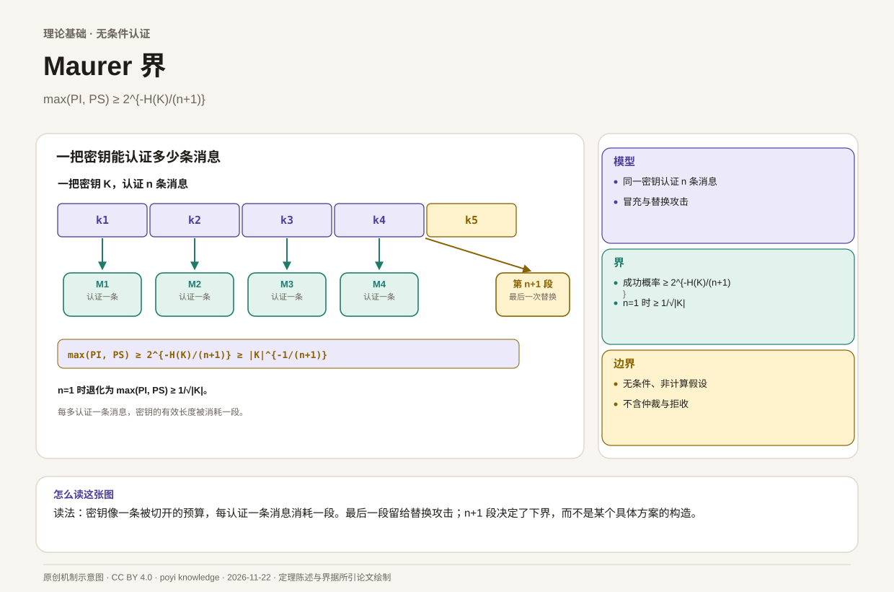
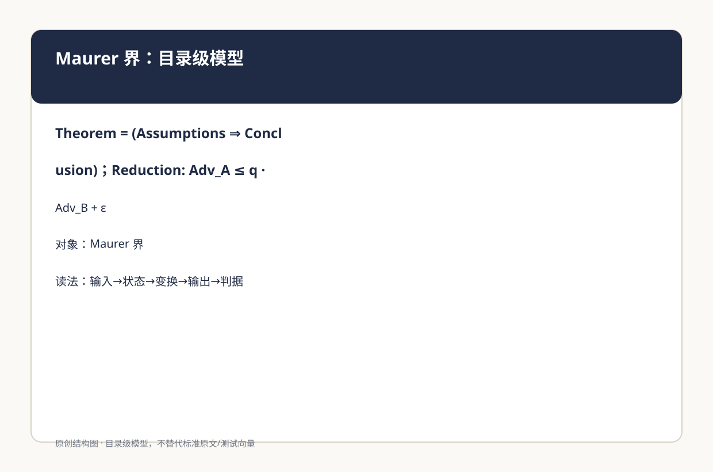

原理与机制
定理：Maurer 界（Maurer's Bound）。### 无条件认证的模型
发送者与接收者共享同一把密钥 K，要在同一密钥下认证 n 条消息 M1,…,Mn。敌手计算能力不限，只知道系统设计与密文/标签分布，不知道 K。攻击分两类：冒充（直接伪造一条被接收的消息）与替换（截获一条合法消息后改成另一条）。若接收者从不拒绝合法消息，Maurer 的界说 max(PI,1,…,PI,n,PS,n) ≥ 2^{-H(K)/(n+1)} ≥ |K|^{-1/(n+1)}。n=1 时退化为 max(PI,PS) ≥ 2^{-H(K)/2} ≥ 1/√|K|。### 为什么是 n+1 段
直观上，密钥要在 n 次“这条消息是否合法”的判断中提供不确定性，还要留一段给最后一次替换。每认证一条消息就消耗一段密钥预算；把 K 切成 n+1 段后，敌手只要猜中其中一段的有效信息，就能在某次攻击中成功。严格证明把认证看成假设检验：在零假设（合法发送者）与备择假设（敌手伪造）之间，密钥熵限制了两个分布的区分能力。### 熵界与均匀密钥
H(K) 是密钥的香农熵。因为 H(K) ≤ log|K|，所以 2^{-H(K)/(n+1)} ≥ |K|^{-1/(n+1)}。这把“密钥长度”与“可认证消息数、可达到的欺骗概率”连在一起：要让成功概率不超过 2^{-b}，密钥至少要有约 (n+1)b 位熵。

为什么重要
它解释了为什么信息论安全的 MAC 不能既用短密钥又认证很多消息。无条件安全不依赖计算假设，因此敌手有无限时间也仍然受这个下界约束。它也解释了“密钥用一次就换”的代价：n 越大，每条消息可分到的密钥熵越少。### 与计算安全 MAC 的区别
HMAC、CMAC 等计算安全 MAC 可以用固定长度密钥认证大量消息，因为安全性建立在 PRF/分组密码假设上，敌手被限制为多项式时间。Maurer 界属于无条件认证理论；它不否定计算 MAC，而是说明“无计算假设”时的硬下限。把两者混在一起，会得出“所有 MAC 都必须和消息一样长”的错误结论。### 对设计的启示
设计信息论 MAC 时，必须同时报告密钥长度、可认证消息数 n 与目标欺骗概率。只写“使用 128 位密钥”而不写 n，无法判断是否达到 2^-64 的欺骗界。
应用与实例
1.确定 n：同一密钥计划认证多少条消息。2.确定目标 ε：敌手成功概率上限。3.由 ε ≥ 2^{-H(K)/(n+1)} 反推 H(K) ≥ (n+1) log2(1/ε)。4.检查密钥是否真能达到该熵；短密钥、偏置密钥或可预测密钥都不满足。5.若 n 很大，改用分层密钥、每消息派生密钥或计算安全 MAC，而不是硬撑无条件界。### 典型场景
- 无条件 MAC / 认证码：Carter–Wegman 型通用哈希 + 一次性密钥，必须按 n 计算密钥消耗。- 量子密钥分发后的认证：若用一次性 MAC，密钥长度要与认证的消息量和目标失败概率匹配。- 教学与审计：用 n=1 的 1/√|K| 说明“128 位密钥并不能给出 128 位认证安全”。

边界与攻击面
1.模型假设接收者从不拒收合法消息。若系统允许拒收、重传或仲裁，界的形式会变，不能直接套用。2.只覆盖冒充与替换两类攻击；不覆盖密钥泄露、实现侧信道、重放或拒绝服务。3.界是下界，不是构造。它说“任何方案都至少有这么高的欺骗概率”，不保证存在达到等号的方案；达到界需要特定的密钥分割与编码设计。4.n 必须事先固定。若方案动态增加消息数，必须重新计算密钥预算；把 n 当成无限会得到无意义的界。5.熵不是长度。H(K) 可能远小于密钥比特数；全零密钥、低熵口令都不满足模型。6.不提供机密性。认证与保密是两个目标；Maurer 界不涉及消息保密，也不替代 Shannon 的密钥熵界。
历史与背景
Simmons 在 1984 年开启认证理论的下界研究，Gilbert、MacWilliams 与 Sloane 等人给出组合界。Maurer 1996 在 STACS 上把这些结果统一为假设检验框架，给出对 n 条消息的通用下界；2000 年在 IEEE Transactions on Information Theory 上给出更完整的假设检验处理。### 今天的用途
这条界仍是信息论认证、量子密钥分发后认证与无条件 MAC 参数分析的基础。它提醒工程界：计算安全 MAC 的“短密钥”不是免费的，它把安全性转移到了计算假设上。
逐步示例与核验
形式模型与复算步骤
[\Pr[\mathrm{Bad}_A(\lambda)]\le \varepsilon(\lambda)]
Maurer 界的公开参数、密钥/随机数与消息；变量说明：Bad 为归约中定义的失败事件，ε 为可忽略函数。1.定义失败事件。2.构造归约把攻击者转成困难问题求解器。3.证明失败概率上界。边界：公式只覆盖已登记的参数与假设；参数取值、标准版本和实现细节仍以来源为准。
参考出处
- Wikipedia search entry for Maurer 界. https://zh.wikipedia.org/w/index.php?search=Maurer%20%E7%95%8C
- Handbook of Applied Cryptography (Menezes, van Oorschot, Vanstone). https://www.cacr.math.uwaterloo.ca/hac/